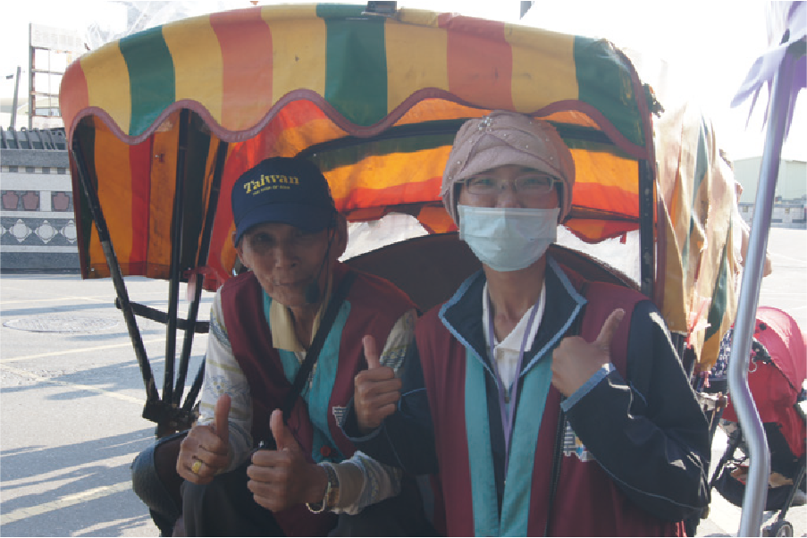

Rickshaw Puller on Lukang Old Street
Rickshaw Pullers in our local area have a century-long history. We interviewed long-time trishaw pullers, capturing their stories in videos. We aim to share the industrial narrative of Lukang's trishaw industry, shedding light on the experiences and challenges faced by these trishaw pullers.
- Promote the century-old rickshaw industry in Lukang Old Street.
- Document the beauty of rickshaw puller culture.
- Visual Design
- Research and synthesis
About Our Project
Lukang, once a thriving trade port in Changhua County, Taiwan, has transformed its historical temples, markets, and industries for tourism. Trishaw services are now a part of this transformation.
In Lukang today, trishaw drivers serve as guides, showcasing the town's historic landmarks to tourists. We interviewed a father-daughter trishaw duo, capturing their work and creating a documentary.
Client Meeting, Field Research
Script Writing
Filming & Editing, Visual Design
Key Vision
To convey the warm and friendly impression of Lukang Town, we chose a hand-drawn style and warm color tones.
Promotional Materials
We also designed promotional materials like business cards and posters to help promote the trishaw industry.
The Details
The rows of interweaving tile-roofed houses were drawn with reference to old photos of Lukang Town around 1960, capturing the town's initial charm.
The story of Rickshaw Pullers
During the interviews, we heard about the reasons trishaw drivers engage in trishaw services and learned about their life stories.
We also heard about the challenges of running a trishaw industry, but at the same time, witnessed the drivers' strong determination.
The Documentary of Rickshaw Puller on Lukang Old Street